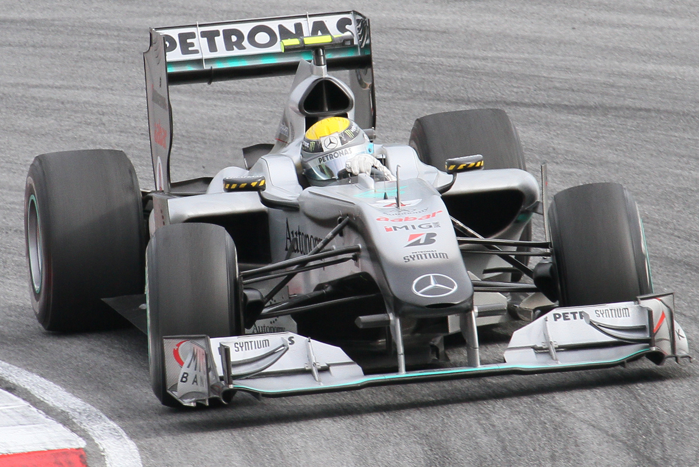

Mercedes – niemiecki zespół, konstruktor i dostawca silników Formuły 1, aktywny w latach 1954–1955 i od 2010 roku, po przejęciu Brawn GP. Mistrzami świata kierowców w barwach Mercedesa byli Juan Manuel Fangio, Nico Rosberg i Lewis Hamilton.
W listopadzie 2009 roku Mercedes ogłosił powrót do Formuły 1 po wykupieniu wspólnie z Aabar Investments 75,1% udziałów w Brawn GP. Tytularnym sponsorem zespołu został Petronas, a jego szefem pozostał Ross Brawn. Kierowcami zostali Nico Rosberg z Williamsa oraz powracający do Formuły 1 po przerwie Michael Schumacher.